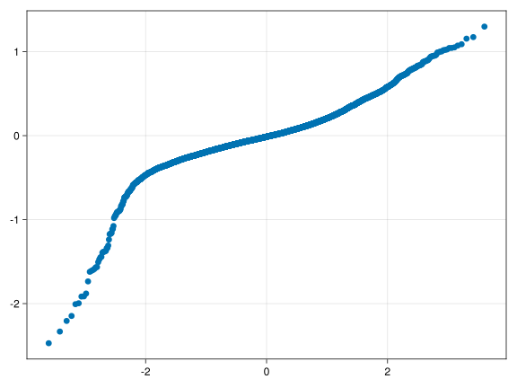
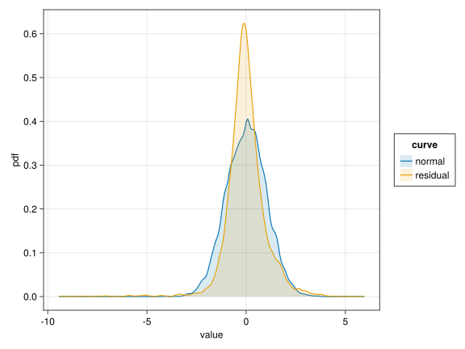

Antje Hofmann: Learning Syntactic Relations with the Mole Task
RePsychLing in SMLP2022
Author
Reinhold Kliegl
Published
August 24, 2022
1 Background
Children’s (age: 4-8 years)reaction times in a task teaching them syntactic relations.
1.1 Overview
Original analysis is by Antje Hofmann.
MixedModels.jl version
Addition of new chunks illustrate
selection of parsimonious LMM using random-effects PCA
plotting conditional means
illustration of borrowing strength
2 Readme
2.1 Design
2.2 Variables
Subj: Participant ID (renamed from ID; random factor)
Item: Word ID (random factor)
age: 4 - 8 years
Block (within-Subj/within-Item):
1st Learning
2nd Learning
Disruption
Recovery
Target(renamend fom targetness)
non-syllable target
syllable target
rt: response time
3 Setup
First attach the MixedModels.jl package and other packages for plotting. The CairoMakie.jl package allows the Makie graphics system [@Danisch2021] to generate high quality static images. Activate that package with the SVG (Scalable Vector Graphics) backend.
Code
usingAlgebraOfGraphicsusingArrowusingCairoMakie # graphics back-endusingCategoricalArraysusingChainusingDataFramesusingDataFrameMacros # simplified dplyr-like data wrangling usingKernelDensity # density estimationusingMixedModelsusingMixedModelsMakie # diagnostic plotsifcontains(first(Sys.cpu_info()).model, "Intel")usingMKL # faster LAPACK on Intel processorsendusingProgressMeterusingRandom # random number generatorsusingRCall # call R from JuliausingStatsModelsusingAlgebraOfGraphics: boxplotusingAlgebraOfGraphics: densityusingMixedModelsMakie: qqnormusingMixedModelsMakie: ridgeplotusingMixedModelsMakie: scatterusingMixedModelsMakie: caterpillarProgressMeter.ijulia_behavior(:clear);CairoMakie.activate!(; type="svg");
The data are available as an arrow file.
Most of preprocessing was done with R in RStudio (see Hofmann_Maulwurf.Rmd).
Order of factor levels should be checked.
Code
dat =DataFrame(Arrow.Table("./data/Hofmann_Maulwurf_rt.arrow"))transform!(dat, :Target => categorical =>:Target,:Block => categorical =>:Block,:age => (x -> x .-6) =>:a1, # center age (linear) at 6 years:rt => (x ->log.(x)) =>:lrt)describe(dat)
8 rows × 7 columns
variable
mean
min
median
max
nmissing
eltype
Symbol
Union…
Any
Union…
Any
Int64
Type
1
Subj
p01
p85
0
Union{Missing, String}
2
Item
01PA.ogg
32SG.ogg
0
Union{Missing, String}
3
age
6.21081
3.7
6.31
8.04
0
Union{Missing, Float64}
4
Block
1st Learning
Recovery
0
Union{Missing, CategoricalValue{String, UInt32}}
5
Target
Non-target syllable
Target syllable
0
Union{Missing, CategoricalValue{String, UInt32}}
6
rt
2335.39
228.0
2100.0
8389.0
0
Union{Missing, Float64}
7
a1
0.210813
-2.3
0.31
2.04
0
Float64
8
lrt
7.67367
5.42935
7.64969
9.03468
0
Float64
Centering age at six years yields an interpretable GM
Factor levels can also be set when contrasts are defined (see below).
BoxCox check showed that reaction time rt [ms] should be transformed to speed [1/s] = [Hz]
Indicator variables for Target and Block generated in R.
4 LMM analysis
4.1 Contrasts
Code
contrasts =merge(Dict(:Target =>EffectsCoding()),Dict(:Block =>SeqDiffCoding()),Dict(nm =>Grouping() for nm in (:Subj, :Item)) );
The deviance improves, but we end up with an overparameterized LMM. Remove the two small VCs of the three Block x Target interactions (i.e., the third contrast of the Block factor).
4.6 A parsimonious parameter LMM m_prm
We remove one of the VC for trgt * trng contrast interaction, that is one of the three interaction terms.
LMM m_prm2 is a defensible solution according to \(\Delta\) AIC, \(\Delta\) BIC suggests we should not bother with CPs.
Code
coeftable(m_prm2)
Coef.
Std. Error
z
Pr(>
(Intercept)
7.68255
0.0387612
198.20
<1e-99
trgt
-0.00948231
0.00442251
-2.14
0.0320
trng
-0.0841453
0.027927
-3.01
0.0026
drpt
0.042882
0.0228889
1.87
0.0610
rcvr
-0.0370301
0.0226357
-1.64
0.1019
a1
-0.0922378
0.0338572
-2.72
0.0064
trgt & trng
-0.00176218
0.00963316
-0.18
0.8549
trgt & drpt
-0.0199304
0.0181574
-1.10
0.2724
trgt & rcvr
-0.00411495
0.0162153
-0.25
0.7997
trgt & a1
-0.00874275
0.00388989
-2.25
0.0246
trng & a1
0.041405
0.0244048
1.70
0.0898
drpt & a1
0.0287418
0.0198971
1.44
0.1486
rcvr & a1
-0.0208158
0.0197051
-1.06
0.2908
trgt & trng & a1
-0.00234866
0.00840934
-0.28
0.7800
trgt & drpt & a1
0.0171544
0.0158654
1.08
0.2796
trgt & rcvr & a1
0.00435316
0.0141863
0.31
0.7590
4.8 Pruning fixed-effects
There is an option of pruning some higher-order interactions.
4.9 Diagnostic plots
Various visualizations are used to check whether or not data are defensibly modeled with an LMM. They may lead to removal of outliers, transformations of the dependent variable, and deliver valuable heuristic information to be followed up with exploratory post-hoc analyses or ideally replication of new insights gained this way. In practice, it appears that only severe violations will stop people from reporting a model.
4.9.1 Residuals over fitted
Code
scatter(fitted(m_prm2), residuals(m_prm2))
Looks like we missed some fast response times.
4.9.2 Q-Q plot
Code
qqnorm(m_prm2; qqline=:none)

Hm?
4.9.3 Residual distributions: observed vs. theoretical
Curves for residulas based on observed and theoretical values should correspond.
Code
let n =nrow(dat) dat_rz = (; value=vcat(residuals(m_prm2) ./std(residuals(m_prm2)), randn(n)), curve=repeat(["residual", "normal"]; inner=n), )draw(data(dat_rz) *mapping(:value; color=:curve) *density(; bandwidth=0.1); )end

Figure 1: Kernel density plot of the standardized residuals for model m1 versus a standard normal
They are a bit too narrow.
4.10 Conditional means of random effects
4.10.1 Subject-related conditional means of random effects
Figure 2: Prediction intervals on subject random effects for model m_prm2
4.10.2 Borrowing-strength plots
Shrinkage refers to the adjustment of subject-level or item-level predictions by taking population estimates into account. The further a subject’s/item’s estimate is from the fixed effect or the more variable or less reliable the subject’s/item’s estimate, the more the prediction will be shrunk towards the population estimate. Alternative terms for shrinkage are “borrowing strength” (Tukey) and regularization. My favorite is actually Tukey’s because indeed we borrow strength from the population estimates to make predictions for individual subjects’ effects. The goal of this section to illustrate the results of borrowing strength.
Subject-related conditional means of random effects revealed information about individual differences beyond fixed effects. Would these results also be visible in unconditional means, that is when we compute GM and experimental effects within subjects (i.e., as fixed effects) without borrowing strength from the population estimates?
In the following plots, effect estimates based on alone on each subject’s data (i.e., no pooling of data, no borrowing of strength) are plotted in pink and the subjects’ conditional means shown in the caterpillar plots are plotted in blue. The arrows indicate how much a subject’s prediction is changed by borrowing strength from knowledge of the population estimates.